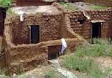
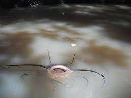

La vielle mosquee de Bobo DioulassoLe quartier de Dioulasso-Bâ (vieux quartier)La tombe de la princesse Guimbi Ouattara Le musée municipalLa tombe de TIEFO AMOROLa acthédrale notre dame de la paixLa GuinguetteLe lac sacré de DafraLa village de KOROLe musée de la musique d'hier et d'aujourd'huiLes gravures rupestres de Borodougou